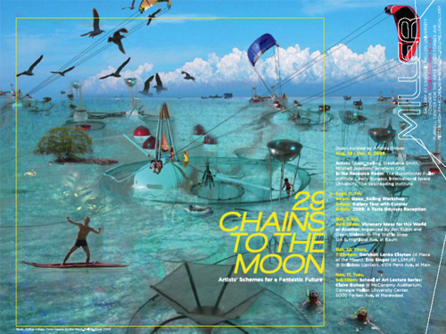

Welcome to Vol. 10 No. 8 of Design Science News, the e-bulletin of the Buckminster Fuller Institute
Design Science News brings you important updates about BFI’s programs and activities as well as news from around the world related to humanity’s option for success and comprehensive design science.Now Accepting Entries for the 2010 Buckminster Fuller Challenge
Each year a distinguished jury awards a $100,000 prize to support the development and implementation of a strategy that has significant potential to solve humanity’s most pressing problems. Entries are now being accepted and the deadline is midnight, Eastern Time on October 30, 2009.
Visit the Challenge site for full details on how to enter.
Dymaxion Artifacts Store: Discounted Maps Now Available!
BFI is proud to offer all three versions of the Dymaxion Map at a discounted price. Due to slight imperfections, such as a slightly bent corner or worn edge, we are inhibited from selling these posters at full price. A great deal for teachers, parents, and thrifty buyers. Further discounted when ordered in large quantities.
Order yours today!
Join BFI this Weekend for “Across the Generations: Legacies of Hope and Meaning”

September 11-13, 2009, Fordham University will host “Across the Generations: Legacies of Hope and Meaning”, an international conference sponsored by the Institute of General Semantics.
The three day conference features numerous keynote speakers, including a plenary talk by Dr. Michael Ben Eli of the Sustainability Laboratory, “The Cybernetics of Change, the Media and the Challenge of Sustainability” (Friday at 12:00 p.m.) and a panel session with BFI founder andf board member Jaime Snyder & BFI executive director Elizabeth Thompson, “Legacies of Hope and Meaning: Buckminster Fuller, Neil Postman, Alfred Korzybski and Marshall McLuhan” (Saturday at 11 a.m.).
To register for and learn more about the symposium visit the website for The Institute of General Semantics. September 11-13 at Fordham University’s Lincoln Center campus, Pope Auditorium, Lowenstein Hall (corner of W. 60th St. and Columbus Ave. NY, NY).
BFI Hosts Panel at the 2009 Bioneers Conference

Join the Bioneers for this leading-edge forum in San Rafael, California, October 16-18 (with intensives October 15 and 19). At this premiere environmental conference, social and scientific innovators focus on solutions inspired by nature and human ingenuity. The 2009 Bioneers Conference includes plenary speeches from: Amazonian Chief Almir, Brock Dolman, Kari Fulton, Jack Hidary, Sarah James, Jensine Larsen, Joanna Macy, Mari Margil, Jason McClennan, Michael Pollan, Jerome Ringo, Arturo Sandoval, Dr. Andrew Weil, Lily Yeh and many more!
The BFI session, Friday October 16th 4:30-6:00 pm, will focus on the Buckminster Fuller Challenge. Panelists include BFI executive director Elizabeth Thompson; 2008 Challenge winner John Todd; Greg Watson, 2009 Challenge Juror and Bioneers board member; and Ryan Chin, team leader of the 2009 Challenge winning entry.
Connect with engaged bioneers, who are making a real difference. Learn more and register here.
TRENDS & PERSPECTIVES
Researchers Explore Pavement as Alternative Energy Source
It may be hot enough to fry an egg, but one local company is trying to prove you can do something even more useful with sizzling pavement; generate energy.
Novotech Inc., an Acton-based optical and semiconductor materials company, has teamed up with Rajib Mallick, an associate professor at Worcester Polytechnic Institute, and Sankha Bhowmick, an associate professor of engineering at the University of Massachusetts Dartmouth, to develop technology similar to radiant floorboard heating that would draw heat captured in asphalt and other roadway materials and generate hot water or even steam that could be used to generate power.
If it works, it could effectively turn lightly used parking lots into massive water heaters.
“A tremendous amount of heat is coming in from asphalt,” said Michael Hulen, founder and owner of Novotech. “It would probably be described as waste heat, but we kind of think of pavement as a new energy source.”
Continue reading here...
Related:
- Could We Replace the Nation’s Pavement with Solar Panels?
- The Importance of Green Roads
Electric Car Sharing Plan to Hit Paris
Could the City of Lights soon become the City of Electric Cars? Paris Mayor Bertrand Delanoe, building on the success of the city’s popular Velib curbside bike rental scheme, is planning to deploy a fleet of 2,000 electric cars that customers can pick up and drop off at rental stands around the city. Another 2,000 vehicles will be offered in two dozen surrounding cities.
The green scheme, dubbed Autolib (short for “automobile” and “liberte”), is scheduled for launch as early as the end of 2010, although city officials say the startup date could be closer to mid-2011. Advocates say the system would reduce carbon dioxide emissions by 22,000 tons a year while improving traffic congestion as fewer Paris residents would need to own cars. It would be the first major city to offer such a service. “This could revolutionize transport,” Delanoe told French radio station RMC when he first proposed the program in June 2008. Continue reading here...
Related:
- Blue Cross donates $1M to Minnesota bike sharing program
- Bike Sharing comes to Boston
More Sun for Less: Solar Panels Drop in Price
For solar shoppers these days, the price is right. Panel prices have fallen about 40 percent since the middle of last year, driven down partly by an increase in the supply of a crucial ingredient for panels, according to analysts at the investment bank Piper Jaffray.
The price drops, coupled with recently expanded federal incentives, could shrink the time it takes solar panels to pay for themselves to 16 years, from 22 years, in places with high electricity costs, according to Glenn Harris, chief executive of SunCentric, a solar consulting group. That calculation does not include state rebates, which can sometimes improve the economics considerably. American consumers have the rest of the world to thank for the big solar price break.
Until recently, panel makers had been constrained by limited production of polysilicon, which goes into most types of panels. But more factories making the material have opened, as have more plants churning out the panels themselves, especially in China.
Continue reading here...
Related:
- The SunCatcher: Concentrating Solar Dishes Set Efficiency Record
- Breakthrough Makes Solar Power More Affordable
Resources
29 Chains to the Moon, Now on View!
Guest curated by Andrea Grover
Organized by Miller Gallery at Carnegie Mellon University
Aug. 28 - Dec. 6, 2009
In 1938, the visionary designer R. Buckminster Fuller wrote Nine Chains to the Moon, his radical proposal for improving the quality of life for all humankind via progressive design and maximization of the world’s finite resources. The title was a metaphor for cooperation; if all of humankind stood on each other’s shoulders we could complete nine chains to the moon. Today, the population of the planet has increased more than three times to 6.7 billion (we could now complete 29 chains to the moon), and the successful distribution of energy, food, and shelter to over 9 billion humans by 2050 requires some fantastic schemes. Like Fuller’s revelation from five decades earlier, 29 Chains to the Moon features artists who put forth radical proposals, from seasteads and tree habitats to gift-based cultures, to make the world work for everyone.
Read more about the exhibit here
The Waterpod Project
Waterpod is a floating sculptural living structure designed as a new habitat for the global warming epoch. Launched in New York in June, 2009, it will navigate down the East River, explore the waters of New York Harbor, and stop at each of the five boroughs.
As a sustainable, navigable living space, Waterpod showcases the critical importance of the environment and serves as a model for new living technologies. It illustrates positive interactions between communities: private and public; artistic and social; aquatic and terrestrial. Built from recycled and reused materials, Waterpod is structured as a double-domed island for: (i) community and artistic activity; (ii) eco-initiatives including food grown with purified water from the Hudson River; and (iii) living space. Open to visitors through the end of September.
Read the NYTimes article about the Waterpod here.
3D rendering of Fullers 4D House
Watch the video on Synchronofile, an independent resource on R. Buckminster Fuller.
Events
Join BFI for Park(ing) Day 2009

Come join The Buckminster Fuller Institute on Friday, September 18th as we participate in Park(ing) Day 2009, an international event that reclaims parking spots and transforms them into engaging, people-friendly public spaces for one day a year. These small, temporary public spaces provide a breath of relief from the auto-clogged reality of New York City, and aim to spark dialogue about our valuable public space and how we choose to use it. Our BFI spot, entitled The Buckminster Fuller Park, will be open all day for anyone that wants to stop by for some geodesic building, Fuller conversing, and general relaxation. Hope to see you there!
Friday, September 18th 9am-6pm
Bedford Ave & N. 10th Street
Brooklyn, NY
See more photos from last years BFI park here
The 13th Annual D.U.M.B.O. Art Under the Bridge Festival
BFI’s Prototype Program will be a featured participant of the D.U.M.B.O Art Under the Bridge Festival, September 25-27, 2009. Our installation “Climbing Coordinates” will transform a diagram of geodesic coordinates into an interactive piece of public artwork, allowing visitors a literal hands-on exploration of geometric networks. Visit the DUMBO Arts Center website for more information about the festival.
To unsubscribe from this newsletter, send email to this address.
To never receive email from The Buckminster Fuller Institute, send email to this address.
This email is sent from:
The Buckminster Fuller Institute
{domain.address}